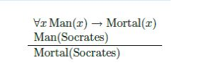
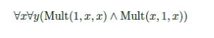

Logic
- Propositional Logic Theorems
- Proofs
7.5 hours
a. Explain the propositional logic theorems
b. Discuss the propositional logic theorems
“Logic will get you from A to B. Imagination will take you everywhere.”
− Albert Einstein
Logic is a formal study of mathematics; it is the study of mathematic reasoning and proofs itself.
In this chapter we cover two most basic formsof logic. In propositional logic, we consider basic
conjunctives such as AND, OR, and NOT. In first-order logic, we additionally include tools to
reason, for example, about “for all prime numbers” or “for some bijective function”. There are
many more logical systems studied by mathematicians that we do not cover (e.g., modal logic for
reasoning about knowledge, or temporal logic for reasoning about time).
PROPOSITIONAL LOGIC. A formula in propositional logic consists of atoms and connectives.
An atom is a primitive proposition, such as “it is raining in Ithaca”, or “I open my umbrella”; we
usually denote that atoms by capital letters (P , Q, R). Theatoms are then connected by
connectives, such as AND (∧), OR (∨), NOT (¬), implication (→), iff (↔). An example of a
formula is
(P ∧Q) →R
If P is the atom “it is raining in Ithaca”, Q is the atom “I have an umbrella”,and R is the atom
“I open my umbrella”, then the formula reads as:
If it is raining in Ithaca and I have an umbrella, then I open my umbrella.Formally, we define
formulas recursively:
¬φ, φ ∧ψ, φ ∨ψ, φ →ψ, φ ↔ψ
are all valid formulas.
What does P ∨ Q ∧ R mean? Just like in arithmetic where multiplication has precedence over addition, here the order of precedence is: NOT ( ), AND ( ), OR ( ), implication ( ), equivalence ( ). The preferred way to disambiguate a formula, or course, is to use parenthesis (e.g., it is more clear and equivalent to write P ∨(Q ∧R)).
Here is how we interpret propositional logic. An atom can either be true (Tor 1) or false (F or 0). This is specified by a truth assignment or, in logic jargon, an interpretation (e.g., an interpretation would specify whether today is really raining, or whether I have opened my umbrella). The connectives are functions from truth value(s) to a truth value; these functions are defined to reflect the meaning of the connectives' English names. The formal definitionof these functions can be seen in a truth table in Figure 6.1.
Most of the definitions are straightforward. NOT flips a truth value; AND outputs true iff both inputs
are true, OR outputs true iff at least one of the inputs are true; equivalence outputs true iff both
inputs have the same truth value. Implication ( ) may seem strange at first. φ ψ is false only
if φ is true, yet ψ is false. In particular, φ ψ is true whenever φ is false, regardless of what ψ is.
An example of this in English might be “if pigs fly, then I am the president of the United States”;
this seems like a correct statement regardless of who says it since pigs don’t fly in our world.1
Finally, we denote the truth value of a formula φ, evaluated on an inter- pretation I, by φ[I].
We define φ[I] inductively:
Given a formula φ, we call the mapping from interpretations to the truth value of φ (i.e., the
mapping that takes I to φ[I]) the truth table of φ.
At this point, for convenience, we add the symbols T and F as special atoms that are always true or
false, respectively. This does not add anything real substance to propositional logic since we
can always replace T by “P ∨ P ” (which always evaluates to true), and F by “P ∧¬ P ” (which
always evaluates to false).
We say that two formulas φ and ψ are equivalent (denoted φ ψ) if for all interpretations I, they evaluate to the same truth value
(equivalently, if φ and ψ have the same truth table). How many possible truth tables are there over n atoms? Because each atom is either true or false, we have
2 n interpretations. Aformula can evaluate to true or false on each of the interpretations, resulting in2 22n possible truth tables (essentially we are counting the number of functions of the form { 0,
1 n} → {0, 1}).
With such a large count of distinct (not equivalent) formulas, we maywonder is our propositional
language rich enough to capture all of them? The answer is yes. The following example can be
extended to show how AND, OR and NOT (∧, ∨ and ¬) can be used to capture any truth table.
Suppose we want to capture the truth table for implication:
We find the rows where φ is true; for each such row we create an AND formulathat is true iff P and Q takes on the value of that row, and then we OR these formulas together. That is:
This can be simplified to the equivalent formula:
The equivalence
is a very useful way to think about implication (and a very useful formula formanipulating logic
expressions).
Finally, we remark that we do not need both OR and AND (∨ and ∧) to capture all truth
tables. This follows from De Morgan’s Laws:
Coupled with the (simple) equivalence ¬¬φ≡ φ, we can eliminate AND (∧),for example, using
Intuitively, a formula is satisfiable if it can be made true.
SATISFIABILITY. We say that a truth assignment I satisfies a formula φ if φ[I] = T; we write
this as I |= φ. A formula φ is satisfiable if there exists a truth assignment I such that I |= φ;
otherwise φ is unsatisfiable.
VALIDITY. A formula φ is valid (or a tautology ) if for all a truth assignments I, I |= φ.
Example 1.
(P →Q) ∨(Q →P )
To see why, note that it is equivalent to
(¬P ∨Q) ∨(¬Q ∨P )
by (SATISFIABILITY), and clearly either ¬P or P is true.
How do we check if a formula φ is valid, satisfiable or unsatisfiable? A
simple way is to go over all possible truth assignments I and evaluate φ[I]. Are there more
efficient algorithms?
It turns out that simply finding out whether an efficient algorithm existsfor satisfiability is a
famous open problem (with a prize money of a million dollars set by the Clay Mathematics
Institute). The good news is that once a satisfying assignment I is found for φ, everyone can
check efficiently that φ[I] = T. Unsatisfiability, on the other hand, does not have this
property: even after taking the time to verify that φ[I] = F for all possible truth as- signments
I, it appears hard to convince anyone else of this fact (e.g., how doyou convince someone that
you do not have a brother?). Finally, checking whether a formula is valid is as hard as
checking unsatisfiability.
Claim. A formula φ is valid if and only if ¬φ is unsatisfiable.
Proof. The claim essentially follows from definition. If φ is valid, then φ[I] = T for every
interpretation I. This means (¬φ)[I] = F for every interpretation I, and so ¬φ is unsatisfiable. The
other direction follows similarly.
Now that we have established the language and semantics (meaning) of propo-sitional logic, let
us now reason with it. Suppose we know two facts. First,
“Bob carries an umbrella if it is cloudy and the forecast calls for rain.”Next we know that
“It is not cloudy.”
Can we conclude that Bob is not carrying an umbrella? The answer is no.Bob may always
carry an umbrella around to feel secure (say in Ithaca).
To make sure that we make correct logical deductions in more complex settings, let us cast the
example in the language of propositional logic. Let Pbe the atom “it is cloudy”, Q be the atom
“the forecast calls for rain”, and R be the atom “Bob carries an umbrella”. Then we are given
two premises:
(P ∧Q) →R, ¬P
Can we make the conclusion that ¬R is true? The answer is no, because the truth assignment
P = Q = F, R = T satisfies the premises, but does not satisfy the conclusion. The next definition
formalizes proper logical deductions.
A set of formulas ψ1, . . . , ψn entails a formula ψ, de- noted by ψ1, . . . , ψn = ψ, if for every
truth assignment I that satisfies all ofψ1, . . . , ψn, I satisfies ψ.
When {ψ1, . . . , ψn} entails ψ, we consider ψ as a logical consequence of {ψ1, . . . , ψn}.
THEOREM 1. ψ1, . . . , ψn entails ψ if and only if (ψ1 ∧ ···∧ψn) →ψ is valid.
Proof. Only if direction. Suppose ψ1, . . . , ψn entails ψ. To show that φ = (ψ1 ψn) ψ is valid,
we need to show that for every truth assignmentI, φ[I] = T. Consider any truth assignment
I; we have two cases:
IF DIRECTION. Suppose φ = (ψ1 ψn) ψ is valid. For any truthassignment I that satisfies
all of ψ1, . . . , ψn, we have (ψ1 ψn)[I] = T. We also have φ[I] = ((ψ1 ψn) ψ)[I]
= T due to validity. Together this means ψ[I] must be true, by observing the truth table
for implication (→). This shows that ψ1, . . . , ψn entails ψ.
Theorem 1 gives us further evidence that we have defined implication(→) correctly. We
allow arguments to be valid even if the premise are false.
Checking the validity of a formula is difficult (as we discussed, it has been a long standing open
question). On the other hand, we perform logic reasoning every day, in mathematical proofs and
in English. An axiom system formalizes the reasoning tools we use in a syntactic way (i.e., pattern
matching and stringmanipulations of formulas) so that we may study and eventually automate the
reasoning process.
An axiom system H consists of a set of formulas, called the axioms, and a set of rules of
inference. A rule of inference is a way of producing a new formula (think of it as new logical
conclusions), given severalestablished formulas (think of it as known facts). A rule of inference
has the form:
When we define an axiom system, think of the axioms as as an initial set of tautologies (preferably
a small set) that describes our world (e.g., Euclidean geometry has the axiom that two distinct
points defines a unique straightline). We can then pattern match the axioms against the rules
of inference to derive new tautologies (logical consequences) from the initial set:
PROOF or DEVIATION. In an axiom system H is a sequenceof formulas χ1, χ2, . . . , χn where
each formula χk either matches5an axiom inH, or follows from previous formulas via an
inference rule from H, i.e., thereexists an inference rule φ1, . . . , φm ► ψ such that χk matches ψ,
and there exists j1, . . . , jm ∈{1, . . . , k −1} such that χji matches φi, correspondingly.
We say a formula χ can be inferred from an axiom system H, denoted by H χ, if there exists a
derivation in H that ends with the formulaχ (when understood, we leave out the subscript
for convenience).
Similarly, we say a set of formulas φ1, . . . , φn infers ► χ (under axiom system H), denoted by φ1,
. . . , φn χ, if there exists a derivation in H that ends inχ, when φ1, . . . , φn are treated as
addition axioms.
It is very important to understand that a-priori, derivation and inference has nothing to do with
truth and validity. If we start with false axioms or illogical rules of inference, we may end up
deriving an invalid formula. On the other hand, if we start with an incomplete set of axioms, or if
we miss a few rules of inference, we may not be able to derive some valid formulas. Whatwe
want is an axiom system that is both complete and sound :
Completeness: An axiom system is complete if all valid statements can bederived.
Soundness: An axiom system is sound if only valid statements can be de-rived.
For example, an axiom system that contains an invalid axiom is not sound, while a trivial axiom
system that contains no axioms or no rules of inferenceis trivially incomplete.
Rules of inference. Here are well-known (and sound) rules of inference for propositional logic:
It is easy to see that all of the above inferences rules preserves validity, i.e., the antecedents
(premises) entail the conclusion. Therefore an axiom system using these rules will at least be
sound.
Example 1.
The following derivation shows that ¬C, ¬C →(A →C) ►¬A.
In our application of Modus Ponens, we have “matched” ¬C with φ and (A →C) with ψ.
Example 2.
The following derivation shows that A ∨ B, ¬B ∨ (C ∧ ¬C), ¬A├ C∧ ¬C. Note that the
conclusion is non-sense (can never be true); this is because we have started with a “bad”
set of axioms.
Axioms. An example axiom may look like this:
φ →(ψ →φ)
By this we mean any formula that “matches” against the axiom is assumed to be true. For example, let P and Q be atoms, then
P →(Q →P )
(P →Q) →((Q →P ) →(P →Q))
are both assumed to be true (in the second example, we substitute φ = P → Q, ψ = Q → P ).
To have a sound axiom system, we much start with axiomsthat are valid (tautologies); it is
not hard to see that the example axiom is indeed valid.
A sound and complete axiomatization. We now present a sound and complete axiom
system for propositional logic. We limit the connectives in the language to only implication (→)
and negation (¬); all other connectives that we have introduced can be re-written using only →
and ¬ (e.g., P ∨ Q ≡ ¬P → Q, P ∧ Q ≡ ¬ (P →¬Q)).
Consider the axioms
THEOREM 1. The axioms (A1), (A2) and (A3), together with the inference rule Modus Ponens,
form a sound and complete axiom system for propositional logic (restricted to connectives →and
¬).
The proof of Theorem 1 is out of the scope of this course (although keepin mind that soundness
follows from the fact that our axioms are tautologies and Modus Ponens preserves validity). We
remark that the derivations guar- anteed by Theorem 1 (for valid formulas) are by and large so
long and tedious that they are more suited to be generated and checked by computers.
NATURAL DEDUCTION. Natural deduction is another logical proof system that generates proofs
that appears closer to “natural” mathematical reasoning. This is done by having a large set of
inference rules to encompass all kinds of reasoning steps that are seem in everyday mathematical
proofs. We do not formally define natural deduction here; instead, we simply list some example
rules of inference to present a taste of natural deduction. Note that these are all valid inference
rules and can be incorporated into axiom systems as well.
Most of the time we also add rules of “replacement” which allow us to rewriteformulas into equivalent (and simpler) forms, e.g.,
First order logic is an extension of propositional logic. First order logic op-erates over a set of
objects (e.g., real numbers, people, etc.). It allows us to express properties of individual objects,
to define relationships between objects, and, most important of all, to quantify over the entire set
of objects. Below is a classic argument in first order logic:
All men are mortal
Socrates is a man
Therefore Socrates is a mortal
In first order logic, the argument might be translated as follows:
Several syntax features of first order logic can be seen above: Ɐ is one of the two quantifiers
introduced in first order logic; x is a variable; Socrates is a constant (a particular person);
Mortal(x) and Man(x) are predicates.
Formally, an atomic expression is a predicate symbol (e.g., Man(x), LessThan(x, y)) with the
appropriate number of arguments; the argumentscan either be constants (e.g., the number 0,
Socrates) or variables (e.g., x,y and z). A first order formula, similar to propositional logic, is multiple atomic expressions connected by connectives. The formal recursive definition goes as
follows:
Example 1. The following formula says that the binary predicate P is transitive:
Example 2. The following formula shows that the constant “1” is a mul-tiplicative identity (the ternary predicate Mult(x, y, z) is defined to be true if xy = z):
Can you extend the formula to enforce that “1” is the unique multiplicative identity?
Example 3. The following formula shows that every number except 0 has a multiplicative
inverse:
We have already described the intuitive meaning of first order logic formulas in English, but let
us now give it a formal treatment. Just as in propositionallogic, we need an interpretation I to
assign values to constants, predicates, etc. Additionally, we need a domain D that specifies
the universe of objects,in order for quantifiers to make sense.
First we define the notion of a sentence; these are formulas without “dangling” variables.
An occurrence of variable x in a formula φ is bound if there is some quantifier that operates on x
(that is it occurs in some sub-formula ψ is the preceded by x or x); otherwise the variable x is
free. A sentence is a formula with no free variables.
Example 1. In the following formula (that is not a sentence), the first occurrence of x is free, and
the second one is bound:
From now on we restrict ourselves to sentences, and define their truth values. Recall that in
propositional logic, we needed a truth assignment for each propositional atom. In first order logic,
we need:
A domain D (simply a set of elements that we are concerned with).
An interpretation I = ID for domain D that
For example, in the Socrates example, we could have D be the set of all people (or the set of all
living creatures, or the set of all Greeks). An interpretation I would need to single out
Socrates in D, and also specify for each a ꓰ D, whether Man(x) and Mortal(x) holds.
Given a first-order sentence φ, a domain D and an interpretation I = ID (together (D, I) is called
a model), we can define the truth value of φ, denoted by φ[I], recursively:
For instance, if the domain D is the natural numbers N, then
A note on the truth value of first order formulas [optional]. We have cheated in our definition above, in the case that φ = Ɐ xψ or ⱻ xψ. When we replace free occurrences of x in ψ by a, we no longer have a formula (be- cause strictly speaking, “a”, an element, is not part of the language). One work around is to extend the language with constants for each element in the domain (this has to be done after the domain D is fixed). A more common approach (but slightly more complicated) is to define truth values for all formulas, including those that are not sentences. In this case, the interpretation also needs to assign an element a D to each (free) variable x occurring in φ; this is out of the scope of this course.
We define satisfiability and validity of first order sentences similar to the way they are defined for
propositional logic.
Given a domain D and an interpretation I over D, we say (I, D) satisfies a formula φ if φ[I]
= T; in this case we write D, I = φ. A formula is φ is satisfiable if there exists D and I
such that D, I = φ, and is unsatisfiable otherwise. A formula is φ is valid (of a tautology) if for
every D and I, D, I |= φ,
We can defined entailment in the same way it was defined for propositional logic. Just as for propositional logic we can find a complete and sound axiomatization for first-order logic, but the axiom system is much more complex to describe and is out of the scope of this course.